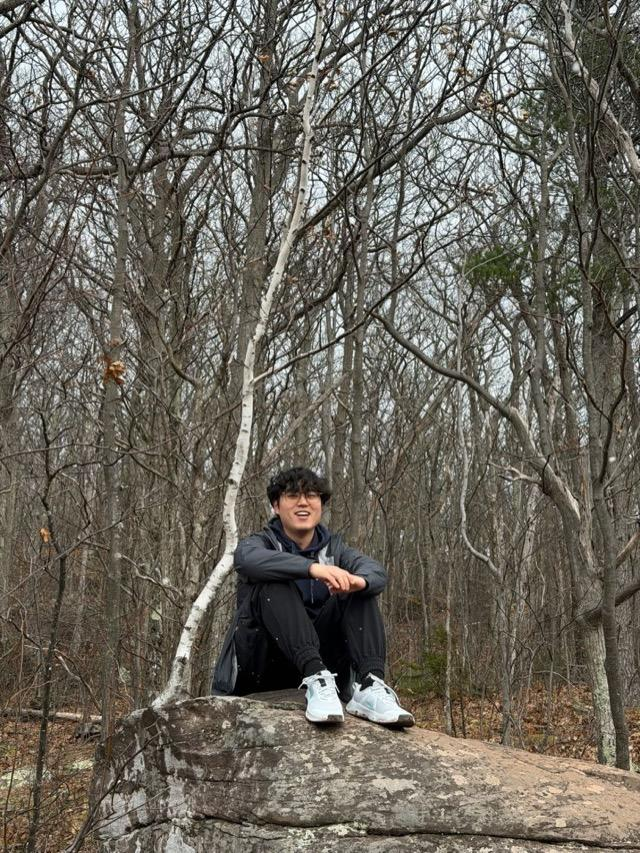

Hello! 👋
I’ve always loved puzzles, and coding is basically one: a clear goal, a pile of pieces, and trying things until they fit. I started in high school and fell in love with the freedom to build anything and share with the world. It’s really satisfying to make something feel seamless on the surface, with a lot of care underneath.
When I’m not coding, I’m probably climbing, cooking, or wandering the city hunting for good boba 🧋

- Home
- New York City
- Studied
- Computer Science & Math
- Worked at
- Adaptive Security
- Fav. language
- Rust
- Listening
- Unexplainable
- Reading
- The Three-Body Problem
I’m making puzzle games. 🧩 Solving puzzles is fun, but making them is a different kind of fun: you’re trying to build that moment where it clicks for someone else.
I think it would be the coolest thing ever if I walked down the streets of NYC and found someone enjoying my puzzles.